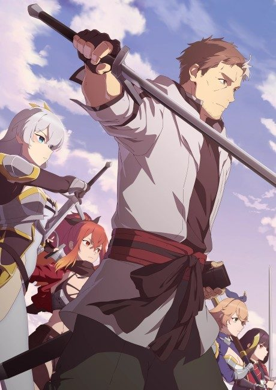
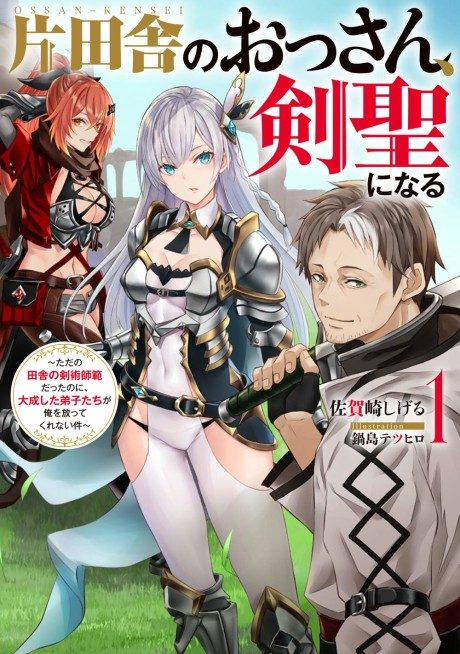

Anime
Light novel2025 · Action, Adventure, Comedy
From Old Country Bumpkin to Master Swordsman
片田舎のおっさん、剣聖になる
AniList6.9
Animeter—
2 seasons24 ep
SourceUnclear
Is it worth pushing through?
Built from what visitors report across all 2 seasons (24 episodes).
Loading reports…Checking what other people said about this one.
Sign in with your email at the top of the page to add your report.